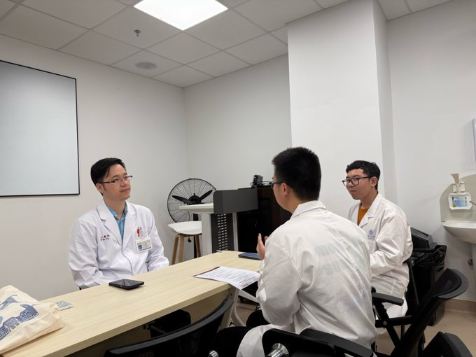
001听见医者的远行
在“早期接触临床”课程期间，我们走进瑞金、仁济、市一、市六等多家附属医院，深入采访了多位曾远赴边疆开展医疗支援的临床专家。
走进这一刻博医计划 / 田野影像纪实
从上海的临床访谈，到六安的医院、村庄与课堂，我们沿着沪六医疗协作的足迹，追问优质医疗资源怎样抵达基层、留下力量。这座影像库收藏旅途中的相遇：医生的讲述、村民的日常、孩子举起的手，以及历史留在土地上的回声。
走进影像库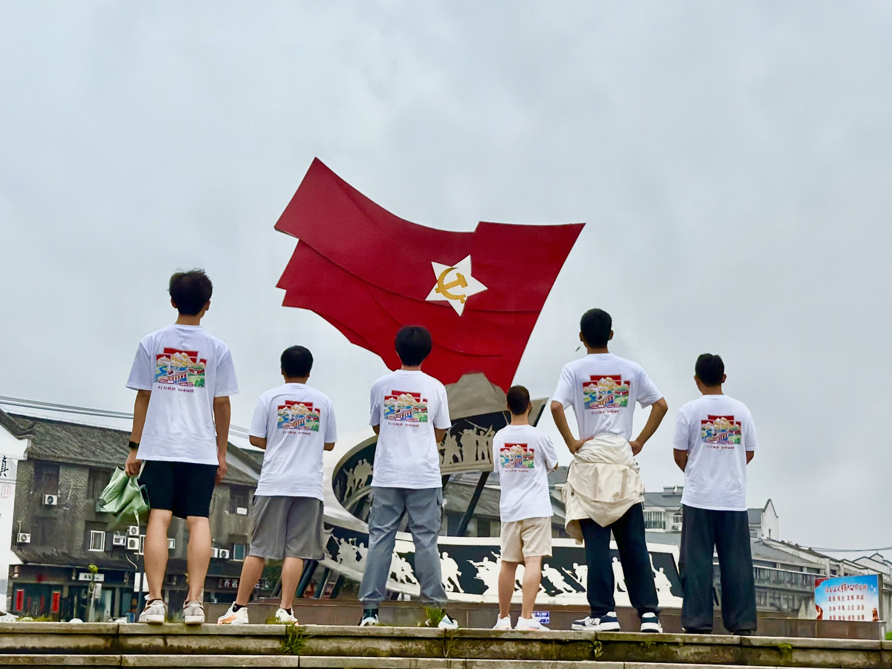
每一张照片，都是重返现场的入口。点开影像，读完它身后的故事；沿着一次提问、一次倾听、一次讲述，看看青年医学生怎样在行走中理解基层、学习担当。
现场 / 影像索引
共 18 则图文

001在“早期接触临床”课程期间，我们走进瑞金、仁济、市一、市六等多家附属医院，深入采访了多位曾远赴边疆开展医疗支援的临床专家。
走进这一刻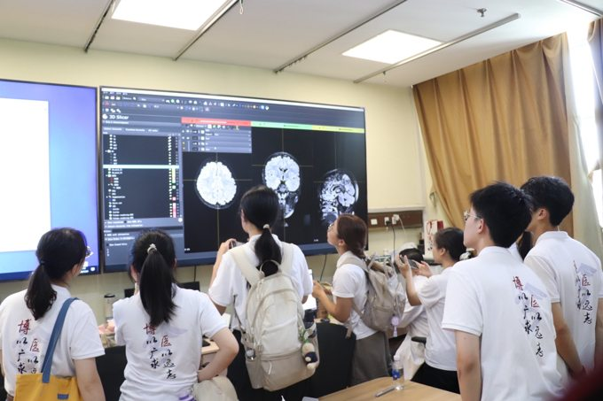
002在瑞金医院帕金森病卓越诊疗中心与脑病中心，前沿的智慧医疗在这里有了直观的展现。
走进这一刻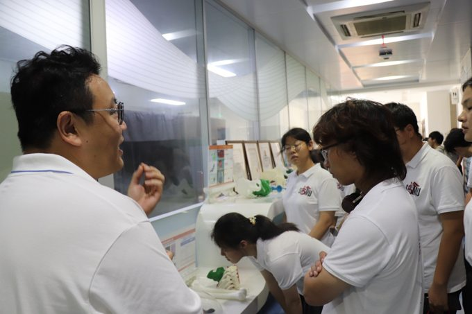
003在上海九院3D打印中心，医工交叉的临床应用在这里得到了直观的呈现。
走进这一刻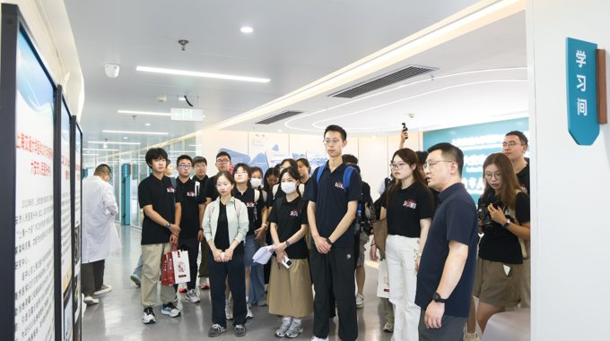
004走进六安市人民医院，这间由上海九院对口援建的3D打印分中心，为“沪六”两地卫生健康领域的深度合作写下生动的注脚。
走进这一刻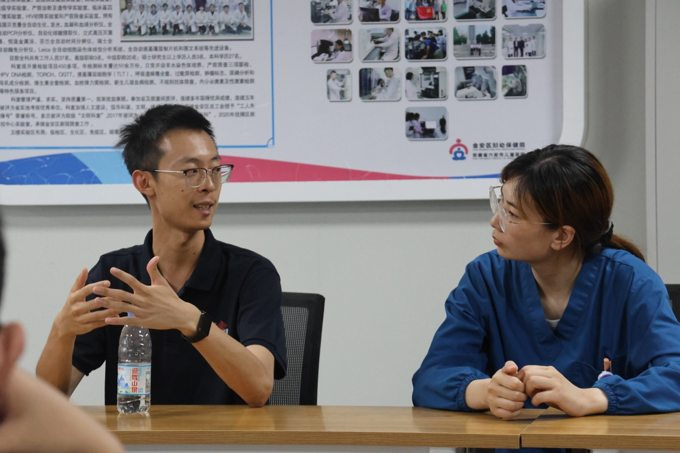
005在六安市金安区妇幼保健院的座谈间里，交流氛围热烈而融洽。
走进这一刻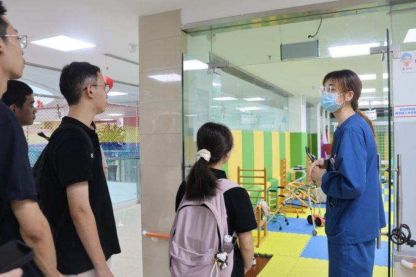
006穿过妇幼保健院诊疗区走廊，医护人员带领大家来到了儿童康复的特色训练区门口。
走进这一刻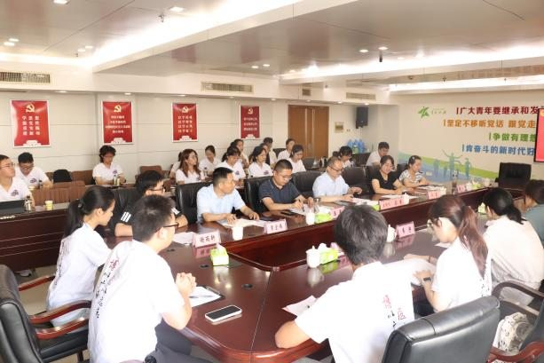
007长桌旁，原本签约仪式上留下的庄严感，很快就化作了你来我往的交流声。话题从宏观的“合作框架”，迅速切入到了医疗协作最接地气的毛细血管里。六安各机关部门的负责人们依次接…
走进这一刻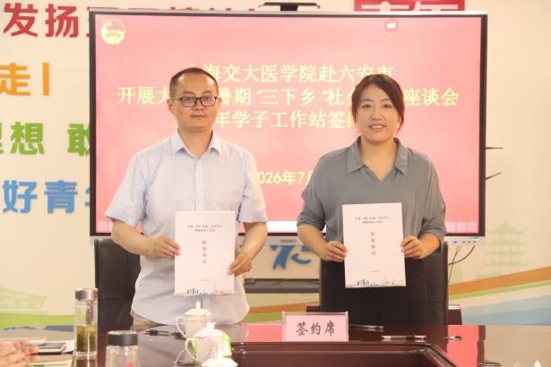
008原本书面上“沪六医疗协作”的宏大规划，在这个会议室里，变成了具体而鲜活的定格。照片里，共青团六安市委副书记苏原和上海交通大学医学院团委副书记程雅青并肩而立，手中的红…
走进这一刻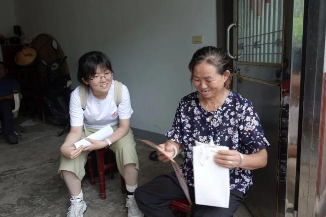
009褪去会议室里的正式感，实践的脚步真正踩进了乡村的泥土里。
走进这一刻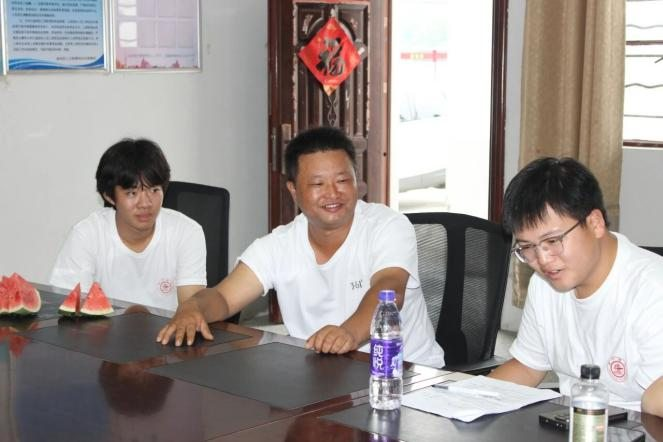
010走进村卫生室，村医笑着迎接了实践团的成员们，用最质朴的乡音讲起了自己每天的工作。那一刻，学校课本里的“基层医疗”，变成了他口中琐碎却重如泰山的日常：慢病随访、术后监…
走进这一刻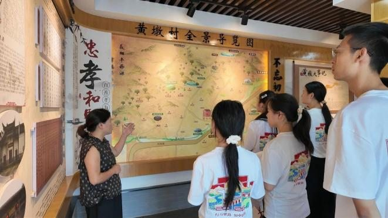
011在黄墩村，走村入户的调研之外，村史馆里的一墙一图，让实践团成员们对这座村庄有了更丰富的认识。
走进这一刻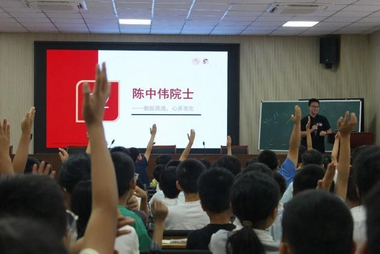
0127月21日上午，舒城县千人桥小学报告厅内气氛热烈，我们在这里开启了一场别开生面的理论宣讲。
走进这一刻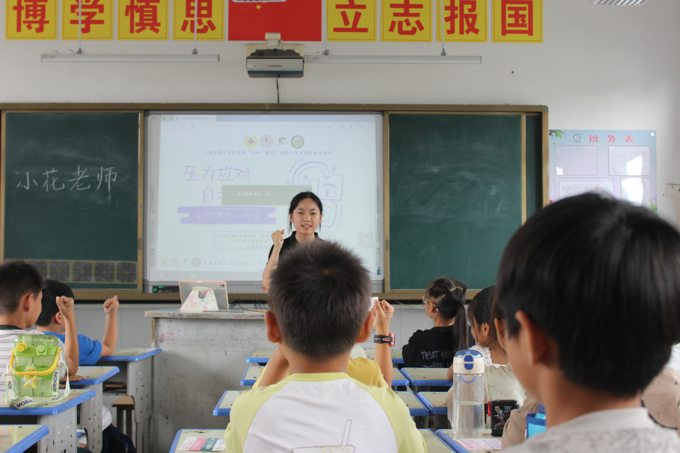
013在下午的分班课堂环节，实践团面向孩子们开展了一场关于压力应对的科普小课堂。课程从“什么是压力”切入，我们用贴近生活的例子解释压力并非全然有害，适度的压力反而能帮助人…
走进这一刻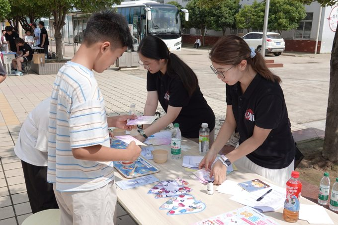
014游园会环节，闪亮牙齿工坊摊位以口腔健康为主题，设置了食物分类和刷牙体验两个互动板块。食物分类环节准备了若干常见食物的卡片，邀请孩子们将卡片分别投入“对牙齿有益”和“…
走进这一刻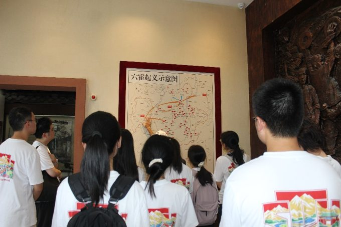
015在苏家埠战役纪念园，我们走进了六霍起义的历史现场。展厅墙上挂着起义时的手写标语、作战地图，柜里摆着磨损的枪支、大刀、长矛，还有战士们用过的油灯和粗瓷碗。讲解员说六霍…
走进这一刻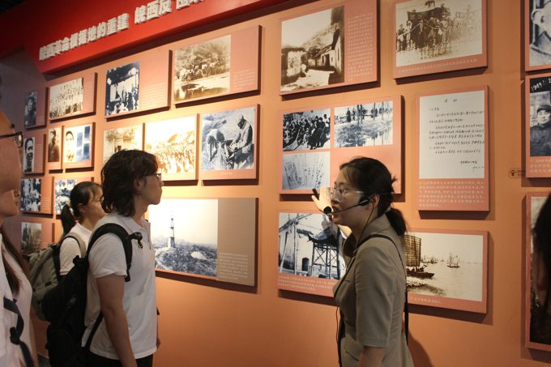
016博物馆展厅不算大，但内容很扎实。从远古陶片到近代史料，皖西的千年脉络都收在了这方空间里。
走进这一刻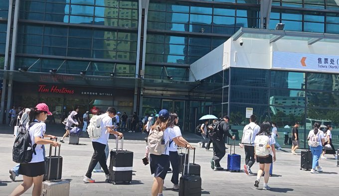
017清晨的上海虹桥站已经人头攒动，拖着行李箱的旅客行色匆匆。站台上，高铁列车安静地停靠着，车身在晨光里泛着银白色的光。
走进这一刻走进独山，青砖灰瓦的老房子还保留着当年的模样。苏维埃俱乐部里，木桌长凳已经旧得发亮，墙上挂着泛黄的地图和手写的会议记录。
走进这一刻没有找到相关故事。试试其他关键词或切换到“全部”。
愿这些现场，让关心基层的人看见彼此，也让我们的提问与行动继续生长。
再看一段故事 ↑